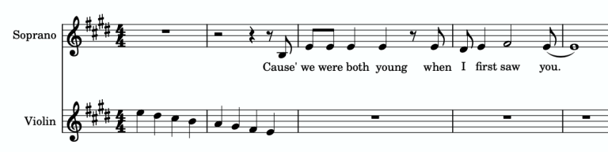
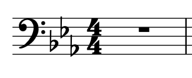
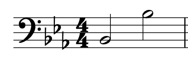
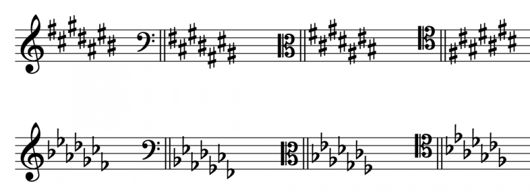
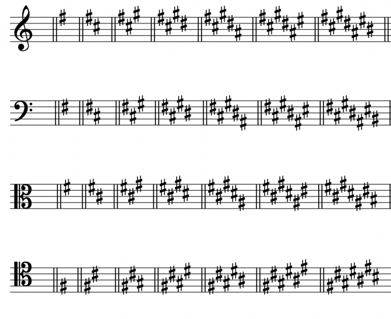
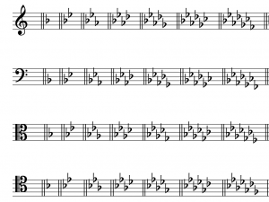

大调音阶与五度圈：整个调性体系的尺子
所有级数（1 2 3 4 5 6 7）、调号、顺阶和弦、乃至小调与调式，全部拿大调音阶作参照尺。用“全 全 半 全 全 全 半”推导调号与五度圈，并在单弦及 6/5 弦两个把位把大调变成吉他手上的肌肉反应。
1. 全局地图
2. 逐个概念
① 大调公式与对称四音列
- 是什么
- 任何音出发按 全 全 半 全 全 全 半 排 7 个音即得大调音阶。OMT 指出它其实由两个完全相同的 全 全 半（Tetrachord） 积木中间隔一个全音拼成：C–D–E–F 与 G–A–B–C。
- 为什么需要
- 大调音阶是整个调性音乐的度量衡：和弦公式（1 3 ♭7）、调式（1 2 ♭3 4 5 6 ♭7）全靠和大调比较来定义。
- 在指板上
- 同一根弦上全音 = +2 品，半音 = +1 品。6 弦空弦 E 大调就是 0-2-4-5-7-9-11-12，两个半音分别在 4–5 品与 11–12 品。
- 听起来
- 常见误解
- “记住指型盒子就不用记全半音关系。”只背盒子一到单弦推旋律或跨把位滑音立刻迷路。
② 音级名称、级数思维与导音（Leading Tone）
- 是什么
- 7 个音依次叫 1 主音（Tonic）、2 上主音、3 中音、4 下属音、5 属音、6 下中音、7 导音（Leading Tone）。用数字 1～7 代替 C D E 叫级数思维。
- 为什么需要
- 吉他手换调最快靠级数：指型与关系不变，C 调的 1 1 5 5 6 6 5 整体往高品挪两品就是 D 调。
- 在指板上
- 导音（7 级）永远就在主音（1 级）下方 1 品（半音）。弹到第 7 级停住不走，耳朵会产生强烈的“还没回家”悬空感。
- 听起来
- 常见误解
- “级数只是考试用的数字。”实际即兴时你脑子里想的永远是“我要落在这个调的 3 音或 5 音上”，而不是死算音名。
③ 调号规则：七个字母各用一次
- 是什么
- 自然音阶必须把 C D E F G A B 七个字母不重不漏各用一次。因此 F 大调（F G A ? C D E）第 4 级只能叫 B♭，绝对不能叫 A♯；G♭ 大调第 4 级必须写 C♭。
- 为什么需要
- 升号调顺时针增加顺序：
F♯ C♯ G♯ D♯ A♯ E♯ B♯；降号调逆时针增加顺序：B♭ E♭ A♭ D♭ G♭ C♭ F♭（刚好倒序）。 - 在指板上
- 升号速算：最后一个升号往上半音 = 主音；降号速算：记住 1 降 = F，2 个以上倒数第二个降号 = 主音。
- 听起来
- 常见误解
- “F 大调里写 A♯ 弹出来也一样，无所谓。”写错字母会让你在读五线谱和标罗马数字时彻底算错度数。
④ 五度圈的底层逻辑
- 是什么
- 把前一个大调的后半四音列（如 C 大调的 G A B C）拿来当新调的前半四音列，只需要把新调第 7 级升半音（F→F♯），就变成了高纯五度的 G 大调。顺时针每走一格多一个升号，逆时针每走一格多一个降号。
- 为什么需要
- 五度圈不仅是查调号表：圈上相邻两调只差 1 个音（近关系调转调首选）；逆时针（四度圈）更是 V→I、ii→V→I 的和声解决方向。
- 在指板上
- 标准调弦 6 弦到 3 弦空弦 E–A–D–G，恰好是五度圈逆时针连续的 4 个音（四度圈），所以 5 弦和 6 弦上的根音推算极其对称。
- 听起来
- 常见误解
- “五度圈只是拿来背诵的图表。”它是你练全 12 个调的顺序表、找 I–IV–V 的快速雷达（任意调左右邻居就是 IV 和 V）。
⑤ 吉他两把位（6 弦/5 弦根音）与 CAGED vs 3NPS
- 是什么
- 先把大调音阶折进 4 个品位舒适区：6 弦根音把位（中指起手 E 型：2-4 / 1-2-4 / 1-3-4...）和5 弦根音把位（中指或小指起手 A/C 型）。
- 为什么需要
- 不要一上来死背 7 个大调把位！先把 6 弦、5 弦两个把位弹到能唱出每个音的级数，再对照 CAGED 与三音一弦（3NPS）。
- 在指板上
- 下面实验室里切换 G 大调 (E 型) 与 C 大调 (C/A 型)，并对比看 3NPS 每根弦固定 3 音的排布。
- 听起来
- 常见误解
- “3NPS 比 CAGED 高级，CAGED 过时了。”CAGED 把 1-3-5 和弦骨架挂在指型里，最适合即兴与伴奏；3NPS 每弦三音适合速弹与连奏，两者是互补工具。
3. 交互指板与伴奏实验室
点下方预设快速切换把位与音阶/和弦；点任意一格都能发声，开启持续音即可直接对着指板练习即兴与听辨。
4. 上琴练习
- 单弦大调推演（60 BPM，四分音符）：1 弦 3 品起弹 G 大调，5 弦 3 品起弹 C 大调，嘴里喊“全 全 半 全 全 全 半”，不停顿上下行。重点验证：按节拍稳定、说得出级数与音名。
- 两把位大调唱级数（65–80 BPM，八分音符）：6 弦根音把位（G、A）与 5 弦根音把位（C、D）各弹两遍，每弹一个音心里/嘴里念 1 2 3 4 5 6 7。重点验证：按节拍稳定、说得出级数与音名。
- 1 分钟五度圈默写（计时 60 秒）：空白纸画时钟圆盘，写出 12 个大调名、升降号数及具体升降音名，然后按逆时针在 6 弦弹出每个主音。重点验证：按节拍稳定、说得出级数与音名。
- 级数移调弹《小星星》（70 BPM）：念着 1 1 5 5 6 6 5 | 4 4 3 3 2 2 1，依次在 G、D、A 三个调连续弹出来。重点验证：按节拍稳定、说得出级数与音名。
5. 分歧点对照
| 容易混淆的两面 | 核心区别 | 实战怎么选 |
|---|---|---|
| 级数思维 vs 死背音名 | 级数描述相对位置（全调通用） | 吉他换调手指形状不变，只移动把位品格，用级数思维迁移最快 |
| CAGED 把位 vs 3NPS 三音一弦 | 和弦锚点优先 vs 拨弦机械均匀 | 即兴描和弦先用 CAGED，跨把位连奏跑句再用 3NPS |
| F♯ 大调 vs G♭ 大调 | 6 个升号 vs 6 个降号 | 同一个音集，看歌曲配器与邻近转调哪个字母更整洁 |
6. 读原资料指南
- OMT: Major Scales, Scale Degrees, and Key Signatures ↗ — 精读 Tetrachord 拼接和升降号推导规则 已嵌入下方全文
- musictheory.net: Key Signature Identification ↗ — 每天 3 分钟练调号反应
📖 本地精要（免跳转直接看：musictheory.net 互动图文短课核心提要）
- 该短课用极简五线谱动画演示基础乐理定义（音符时值、拍号、半音全音、大调/小调音阶、音程转位、三/七和弦及罗马数字）。
- 这些核心定义已 100% 转化为电吉他指板视角，嵌在本模块对应的「讲义」与每日「双语精读卡片」中，读完页内卡片即可完全掌握。
- Scotty West《Absolutely Understand Guitar》 ↗ — 第 6～9 课：最经典的五度圈与大调系统课
📖 本地精要（免跳转直接看：Scotty West 32 课《Absolutely Understand Guitar》全套核心提炼）
- 【指板底层几何】吉他不是 6 根独立的弦，而是一条折叠起来的半音阶尺子；由于 3→2 弦是大三度（4 半音）而非纯四度（5 半音），任何跨过 2、3 弦的音程、和弦或音阶形状都必须往高品方向平移 +1 品。
- 【五指模式（5 Finger Patterns）】CAGED 的本质是同一条大调音阶在指板上的 5 个相邻切片，每个切片内部都装着该调的 I、IV、V 三和弦。
- 【色彩与情绪光谱】把 7 种调式按明亮到阴暗排列（利底亚 → 伊奥尼亚 → 混合利底亚 → 多利亚 → 爱奥利亚 → 弗里几亚 → 洛克里亚），每往右一步正好降一个音级（五度圈逆时针移动一格）。
大调音阶、音级与调号Major Scales, Scale Degrees, and Key SignaturesOMT · 大调音阶、音级与调号
Major Scales, Scale Degrees, and Key Signatures大调音阶、音级与调号
- A major scale is an ordered collection of half (H) and whole (W) steps with the ascending succession W‑W‑H‑W‑W‑W‑H.大调音阶是一组按固定全半音顺序排列的音列，上行结构为：全–全–半–全–全–全–半（W–W–H–W–W–W–H）。
- Major scales are named for their first note (which is also their last note), including any accidental that applies to the note.大调音阶以它的第一个音（同时也是最后一个音）命名，包含该音上的任何变音记号。
- Scale degrees are solmization syllables notated by Arabic numerals with carets above them. The scale degrees are 1̂-2̂-3̂-4̂-5̂-6̂-7̂.音级数字（级数）是配给音阶各音的唱名体系，用上方带折尖帽（^）的阿拉伯数字 1̂–2̂–3̂–4̂–5̂–6̂–7̂ 表示。
- Solfège solmization syllables are another method of naming notes in a major scale. The syllables are do, re, mi, fa, sol, la, and ti.唱名法（do, re, mi, fa, sol, la, ti）是给大调各音命名的另一套体系。
- Each note of a major scale is also named with scale-degree names: tonic, supertonic, mediant, subdominant, dominant, submediant, and leading tone.大调音阶每个音还对应着功能化的音级名称：主音、上主音、中音、下属音、属音、下中音和导音。
- A key signature, consisting of either sharps or flats, appears at the beginning of a composition, after a clef but before a time signature.调号由一组升号或降号组成，写在乐曲每行开头——位于谱号之后、拍号之前。
- The order of sharps in key signatures is F, C, G, D, A, E, B, while the order of flats is the opposite: B, E, A, D, G, C, F. In sharp key signatures, the last sharp is a half step below the tonic (the first note of a scale). In flat key signatures, the second-to-last flat is the tonic.调号里升号出现顺序永远是 F、C、G、D、A、E、B，降号顺序正好完全相反：B、E、A、D、G、C、F。看升号调时，最后一个升号上半音就是主音；看降号调时，倒数第二个降号就是主音。
- The circle of fifths is a convenient visual for remembering major key signatures. All of the major key signatures are placed on a circle in order of number of accidentals.五度圈是快速记忆所有大调调号的极佳视觉图表：调号按升/降号数量依次绕圈排布。
A scale is an ordered collection of half and whole steps (see Half Steps, Whole Steps, and Accidentals to review).音阶是有序的全半音音高集合（复习可参阅 半音、全音与变音记号 一章）。
Open Music Theory · 大调音阶、音级与调号（Major Scales, Scale Degrees, and Key Signatures）。原文作者：Chelsey Hamm and Bryn Hughes。Open Music Theory, Version 2，CC BY-SA 4.0。中文为本站翻译，以英文原文为准。
大调音阶Major ScalesOMT · 大调音阶、音级与调号
Major Scales大调音阶
A major scale is an ordered collection of half- (abbreviated H) and whole steps (abbreviated W) in the following ascending succession: W-W-H-W-W-W-H. Listen to Example 1 to hear an ascending major scale. Each whole step is labeled with a square bracket and “W,” and each half step is labeled with an angled bracket and “H.”大调音阶是由半音（H）与全音（W）严格按上行顺序 W‑W‑H‑W‑W‑W‑H 组成的有序音列。试听例 1 中的上行大调音阶：图中每个全音用方括号标出“W”，每个半音用折线标出“H”。
Example 1. An ascending major scale.例 1. 一个上行大调音阶。
A major scale always starts and ends on notes of the same letter name, one octave apart, and this starting and ending note determines the name of the scale. Therefore, Example 1 depicts a C major scale because its first and last note is a C.大调音阶始终以同一个字母音名开头并以高它一个八度的同名音收尾，这个起止音决定了整条音阶的名字。因此，例 1 是 C 大调音阶（因为它的首尾音都是 C）。
You can practice identifying half steps and whole steps in a major scale in the following exercise:你可以用下面这个练习识别大调音阶中的半音和全音：
The name of a scale includes any accidental that applies to the first and last note. Example 2 shows a B♭ (B-flat) major scale—not a B major scale, which would use a different collection of pitches. Note that the pattern of half and whole steps is the same in every major scale, as shown in Example 1 and Example 2.音阶的名称包含首尾音上附带的任何变音记号。例 2 展示的是 B♭（降 B）大调音阶——注意不能叫 B 大调音阶（B 大调完全是另一组音）。对照例 1 和例 2，可以看到每一条大调音阶内部的全半音排列完全一模一样。
Example 2. A B-flat major scale.例 2. 一条降 B 大调音阶。
Major scales are exceedingly common in many different genres in music. One example of a major scale can be heard in Taylor Swift's "Love Story" (2008). Example 3 shows an excerpt from the end of this song:大调音阶在各种音乐流派里极其常见。流行乐中的一个著名实例是 Taylor Swift 的《Love Story》（2008），例 3 给出了歌曲结尾处的节选：

You can listen to the music in Example 3 starting at 3:42 in Example 4. Listen for the descending major scale in the violin shortly before the voice comes in:你可以在例 4 从 3:42 开始试听该片段，留意人声进场前小提琴走的一段清晰下行大调音阶：
Example 4."Love Story" by Taylor Swift; listen starting at 3:42.例 4. 试听 Taylor Swift《Love Story》第 3:42 处。
You can practice identifying major scales in the following exercise:你可以用下面这个练习训练识别大调音阶：
Open Music Theory · 大调音阶、音级与调号（Major Scales, Scale Degrees, and Key Signatures）。原文作者：Chelsey Hamm and Bryn Hughes。Open Music Theory, Version 2，CC BY-SA 4.0。中文为本站翻译，以英文原文为准。图片版权：Love Story Taylor Swift © Chelsey Hamm is licensed under a CC BY-SA (Attribution ShareAlike) license；Scale Degree Names Derivation © Megan Lavengood is licensed under a CC BY-SA (Attribution ShareAlike) license；Key Signature © Chelsey Hamm is licensed under a CC BY-SA (Attribution ShareAlike) license；Key Signature Application © Chelsey Hamm is licensed under a CC BY-SA (Attribution ShareAlike) license；Order of Sharps and Flats © Chelsey Hamm is licensed under a CC BY-SA (Attribution ShareAlike) license；Sharp-sigs © Megan Lavengood is licensed under a CC BY-SA (Attribution ShareAlike) license；Flat-sigs © Megan Lavengood is licensed under a CC BY-SA (Attribution ShareAlike) license；C maj F maj © Megan Lavengood is licensed under a CC BY-SA (Attribution ShareAlike) license；Sharp Key Signatures © Chelsey Hamm is licensed under a CC BY-SA (Attribution ShareAlike) license；All Flat Key Signatures © Chelsey Hamm is licensed under a CC BY-SA (Attribution ShareAlike) license；Circle of Fifths © Bryn Hughes is licensed under a CC BY-SA (Attribution ShareAlike) license
音级数字、唱名与音级名称Scale Degrees, Solfège, and Scale-Degree NamesOMT · 大调音阶、音级与调号
Scale Degrees, Solfège, and Scale-Degree Names音级数字、唱名与音级名称
Musicians name the notes of major scales in several different ways. Scale degrees are solmization syllables notated by Arabic numerals with carets above them. The first note of a scale is 1̂ and the numbers ascend until the last note of a scale, which is also 1̂ (although some instructors prefer 8̂). Example 5 shows a D major scale with each scale degree labeled with an Arabic numeral and a caret.音乐家有几种不同的方法命名大调音阶的各个音。音级数字是一套音阶标识唱名体系，用头顶戴着折尖帽符号（^）的阿拉伯数字表示。音阶第 1 音记为 1̂，逐级往上走到第 7 音，最后的重复八度音也记为 1̂（个别教材偏好写 8̂）。例 5 给 D 大调的每个音都标上了音级数字。
Example 5. A D major scale.例 5. 一条带音级标号的 D 大调音阶。
Below the scale degrees, Example 3 also shows another method of naming notes in a major scale: solfège solmization syllables. Solfège (a system of solmization syllables) are another method of naming notes in a major scale. The syllables do, re, mi, fa, sol, la, and ti (pronounced doe, ray, me, fah, sew, lah, and tea) can be applied to the first seven notes of any major scale; these are analogous to the scale degrees 1̂, 2̂, 3̂, 4̂, 5̂, 6̂, and 7̂. The last note is do (1̂) because it is a repetition of the first note. Because do (1̂) changes depending on what the first note of a major scale is, this method of solfège is called movable do. This is in contrast to a fixed do solmization system, in which do (1̂) is always the pitch class C.在音级数字下方，这里也展示了第二种体系：唱名（solfège）。唱名法一套固定的发声助记音节：do, re, mi, fa, sol, la, ti 依次对应任意大调的前七个音（等同 1̂ 到 7̂），第八个高八度音还是唱 do (1̂)。因为这里的主音 do (1̂) 会跟着当前是什么调而移动，这叫首调唱名法（与把 do 死死固定在 C 音上的固定调唱名法相对）。
You can practice matching major key signatures with solfège solmization syllables in the following exercise:你可以用下面练习训练大调调号与首调唱名的匹配：
Each note of a major scale is also named with scale-degree names: tonic, supertonic, mediant, subdominant, dominant, submediant, leading tone, and then tonic again. Example 6 shows how these names align with the scale-degree number and solfège systems described above.大调音阶每一个音还另有专属的音级名称：主音、上主音、中音、下属音、属音、下中音、导音，然后回到主音。例 6 对齐列出了数字、唱名和名称三套叫法。
| Scale Degree Number音级数字 | Solfège唱名 | Scale Degree Name音级名称 |
|---|---|---|
| 1̂1̂ | dodo | Tonic主音 (Tonic) |
| 2̂2̂ | rere | Supertonic上主音 (Supertonic) |
| 3̂3̂ | mimi | Mediant中音 (Mediant) |
| 4̂4̂ | fafa | Subdominant下属音 (Subdominant) |
| 5̂5̂ | solsol | Dominant属音 (Dominant) |
| 6̂6̂ | lala | Submediant下中音 (Submediant) |
| 7̂7̂ | titi | Leading Tone导音 (Leading Tone) |
| 8̂ / 1̂8̂ / 1̂ | dodo | Tonic主音 (Tonic) |
Example 6. Scale-degree numbers, solfège syllables, and scale-degree names.例 6. 音级数字、唱名与音级名称总表。
Example 7 shows these scale-degree names applied to an A♭ major scale:例 7 将这些名称标在了一条 A♭ 大调音阶上：
Example 7. An A♭ major scale with scale-degree names.例 7. 标出音级名称的 A♭ 大调音阶。
Example 8 shows the notes and scale-degree names of the A♭ major scale in an order that shows how the names of the scale degrees were derived. The curved lines above the staff show the generic interval between each scale degree and the tonic.例 8 按对称位置重新排列了 A♭ 大调各音，一眼就能看透这些名字是怎么起出来的！五线谱上方的弧线标明了各音级到主音的通用音程度数。
- The word dominant is inherited from medieval music theory, and refers to the importance of the fifth above the tonic in diatonic music.属音（Dominant）源自中世纪乐理，指主音上方五度在自然调性音乐中统治全局的核心地位。
- The word mediant means "middle," and refers to the fact that the mediant is in the middle of the tonic and dominant pitches.中音（Mediant）意思是“中间的音”，因为它正好卡在主音和上方属音的正中间。
- The Latin prefix super means “above,” so the supertonic is a second above the tonic. This is the only "super-" interval.拉丁前缀 super 意为“在上面”，所以“上主音（Supertonic）”就是主音上方二度的音——全音阶只有这一个冠“super”的音。
- The Latin prefix sub means “below;” the subtonic, submediant, and subdominant are the inverted versions (i.e., below the tonic) of the supertonic, mediant, and dominant respectively. (Note that the leading tone is a half step below the tonic, while the subtonic is a whole step below the tonic. We will discuss the subtonic more in Minor Scales, Scale Degrees, and Key Signatures.)拉丁前缀 sub 意为“在下面”；如果以中心主音往下量同样距离（即倒转），主音下方二度的次主音（subtonic，全音距离）、下方三度的下中音（submediant）、下方五度的下属音（subdominant）正好一一镜像对称！（注意半音在主音下的 7 级叫导音，全音在主音下的 7 级才叫次主音，详情见 小调音阶与调号 一章。）
You can practice matching scale degrees, solfège solmization, and scale-degree names of major keys in the following exercise:你可以用下面练习巩固音级数字、唱名和名称互译：
Open Music Theory · 大调音阶、音级与调号（Major Scales, Scale Degrees, and Key Signatures）。原文作者：Chelsey Hamm and Bryn Hughes。Open Music Theory, Version 2，CC BY-SA 4.0。中文为本站翻译，以英文原文为准。图片版权：Love Story Taylor Swift © Chelsey Hamm is licensed under a CC BY-SA (Attribution ShareAlike) license；Scale Degree Names Derivation © Megan Lavengood is licensed under a CC BY-SA (Attribution ShareAlike) license；Key Signature © Chelsey Hamm is licensed under a CC BY-SA (Attribution ShareAlike) license；Key Signature Application © Chelsey Hamm is licensed under a CC BY-SA (Attribution ShareAlike) license；Order of Sharps and Flats © Chelsey Hamm is licensed under a CC BY-SA (Attribution ShareAlike) license；Sharp-sigs © Megan Lavengood is licensed under a CC BY-SA (Attribution ShareAlike) license；Flat-sigs © Megan Lavengood is licensed under a CC BY-SA (Attribution ShareAlike) license；C maj F maj © Megan Lavengood is licensed under a CC BY-SA (Attribution ShareAlike) license；Sharp Key Signatures © Chelsey Hamm is licensed under a CC BY-SA (Attribution ShareAlike) license；All Flat Key Signatures © Chelsey Hamm is licensed under a CC BY-SA (Attribution ShareAlike) license；Circle of Fifths © Bryn Hughes is licensed under a CC BY-SA (Attribution ShareAlike) license
调号Key SignaturesOMT · 大调音阶、音级与调号
Key Signatures调号
A key signature, consisting of either sharps or flats, appears at the beginning of a composition, after a clef but before a time signature. You can remember this order because it is alphabetical: clef, key, time. Example 9 shows a key signature in between a bass clef and a time signature.调号是一组放在乐曲每行开头的升号或降号，用来集中规定哪些音从头到尾默认全要升或降。它的排列顺序按字母表很容易记：谱号（Clef）、调号（Key）、拍号（Time）。例 9 展示了低音谱号与拍号之间的三降调号。
Key signatures collect the accidentals in a scale and place them at the beginning of a composition so that it is easier to keep track of which notes have accidentals applied to them. In Example 9, there are flats on the lines and spaces that indicate the notes B, E, and A (reading left to right). Therefore, every B, E, and A in a composition with this key signature will be flat, regardless of octave. In Example 10 both of these Bs will be flat because B♭ is in the key signature.调号把一条音阶需要的全部分散升降记号提前拎到乐行最左端集中写清，读谱瞬间清爽很多。例 9 这三个降号分别落在 B、E、A 的线/间上——意味着整首曲子无论哪个八度的 B、E、A 都要降半音（如图例 10 中的高低两个 B 全都作 B♭ 演奏）。


Flat key signatures have a specific order in which flats are added, and the same is true of the sharps in sharp key signatures. These orders apply regardless of clef. Example 11 shows the order of sharps and flats in the four most common clefs:不管使用什么谱号，降号和升号加进调号的固定先后顺序都完全一致。例 11 展示了四种常见谱号中升号和降号的写法布局：

The order of sharps is always F, C, G, D, A, E, B. This can be remembered with the mnemonic "Fat Cats Go Down Alleys (to) Eat Birds." The sharps form a zig-zag pattern, alternating going down and up. In the treble, bass, and alto clefs, this pattern "breaks" after D♯ and then resumes. In the tenor clef, there is no break, but F♯ and G♯ appear in the lower octave instead of the upper octave.升号顺序永远是 F、C、G、D、A、E、B（助记句：“Fat Cats Go Down Alleys to Eat Birds”）。它们呈“下一上一”的锯齿形走向，唯独在高、低、中音谱表中到 D♯ 后会往下折一下避开上加线再继续；次中音谱表中则不断裂，但 F♯ 与 G♯ 直接放在低八度。
The order of the flats is the opposite of the order of the sharps: B, E, A, D, G, C, F. This makes the order of flats and sharps palindromes. The order of flats can be remembered with this mnemonic: "Birds Eat And Dive Going Copiously Far." The flats always make a perfect zig-zag pattern, alternating going up and down, regardless of clef, as seen in Example 11.降号顺序正好倒过来：B、E、A、D、G、C、F（与升号顺序互为回文，助记句：“Birds Eat And Dive Going Copiously Far”）。无论在哪个谱号，降号永远保持规整的“上一一下”交错折线。
There are easy ways to remember which key signature belongs to which major scale. In sharp key signatures, the last sharp is a half step below the tonic (the first note of a scale). Example 12 shows three sharp key signatures in different clefs. Here's how to identify each with this method:如何一眼从调号报出这是哪个大调？看升号调时，最后一个升号往上高一个半音就是大调主音（例如：只有 F♯ → 升半音是 G 大调；最后是 G♯ → A 大调；最后是 E♯ → F♯ 大调）。看例 12 三种谱号上的示范：
- The last sharp (in this case the only sharp), F♯, is a half step below the note G. Therefore, this is the key signature of G major.最后一个升号（此处仅一个）是 F♯，高半音是 G，所以是 G 大调。
- The last sharp, G♯, is a half step below the note A. Therefore, this is the key signature of A major.最后一个升号是 G♯，高半音是 A，所以是 A 大调。
- The last sharp, E♯, is a half step below the note F♯. Therefore, this is the key signature of F♯ major.最后一个升号是 E♯，高半音是 F♯，所以是 F♯ 大调。
In flat key signatures, the second-to-last flat is the tonic (the first note of a scale). Example 13 shows three flat key signatures in different clefs. Here's how to identify each with this method:看降号调时，倒数第二个降号本身直接就是大调主音！看例 13 的三个实例：
- The second-to-last flat in this key signature is B♭. Therefore, this is the key signature of B♭ major.倒数第二个降号是 B♭，所以这是 B♭ 大调。
- The second-to-last flat is A♭. Therefore, this is the key signature of A♭ major.倒数第二个降号是 A♭，所以这是 A♭ 大调。
- The second-to-last flat is G♭. Therefore, this is the key signature of G♭ major.倒数第二个降号是 G♭，所以这是 G♭ 大调。
There are two key signatures that have no "tricks" that you will simply have to memorize. These are C major, which has nothing in its key signature (no sharps or flats), and F major, which has one flat: B♭ (Example 14).只有两个基础调没有“倒数第二个记号”，必须直接死记：C 大调（没有任何升降号）和 F 大调（仅一个 B♭，见例 14）。
Example 15 shows the key signature for C major (no sharps or flats) followed by all of the sharp key signatures in order in all four clefs: G, D, A, E, B, F♯, and C♯ major.例 15 按升号个数依次展示了 C、G、D、A、E、B、F♯、C♯ 八个升号侧大调在四种谱表上的完整调号：

Example 15. The key signatures of C, G, D, A, E, B, F♯, and C♯ in all four clefs.例 15. C 与 7 个升号大调在四种谱表中的标准写法。
Example 16 first shows the key signature for C major (no sharps or flats), then all of the flat key signatures in order in all four clefs: F, B♭, E♭, A♭, D♭, G♭, and C♭ major.例 16 先列出 C 大调（0 记号），接着按降号个数展示 F、B♭、E♭、A♭、D♭、G♭、C♭ 八个降号侧大调的完整调号：

Example 16 first shows the key signature of C major (with no sharps or flats), and then the key signatures of F, B♭, E♭, A♭, D♭, G♭, and C♭ in all four clefs.例 16 先展示无升降的 C 大调，再逐个展示 F、B♭、E♭、A♭、D♭、G♭、C♭ 大调的全貌。
There is one other "trick" that might make memorization of the key signatures easier: C major is the key signature with no sharps or flats, C♭ major is the key signature with every note flat (7 flats total), and C♯ major is the key signature with every note sharp (7 sharps total).另有一个好用的锚点记忆法：C 大调 = 0 升降，C♭ 大调 = 7 个音全降，C♯ 大调 = 7 个音全升！
Major keys are said to be "real" if they correspond to one of the key signatures in Examples 15 or 16. If a double sharp or double flat would be needed for a key signature, then that key signature would be "imaginary." Occasionally, you may encounter music in an imaginary key. Example 17 shows an F♭ major scale; an F♭ major key signature is imaginary because it would need a B𝄫.只有落在上述 15 个调号内的调被称为“实际存在调（real keys）”。如果要写成一条音阶必须用到重升号或重降号，那种调号就叫“假想调（imaginary keys）”。偶尔在复杂转调里还是会撞见它们（例如例 17 需要重降 B𝄫 的 F♭ 大调音阶）。
Example 17. An F♭ major scale in treble clef.例 17. 高音谱表上属于“假想调”的 F♭ 大调音阶。
You can practice identifying major key signatures in the following exercise:你可以用下面练习巩固识别大调调号：
Open Music Theory · 大调音阶、音级与调号（Major Scales, Scale Degrees, and Key Signatures）。原文作者：Chelsey Hamm and Bryn Hughes。Open Music Theory, Version 2，CC BY-SA 4.0。中文为本站翻译，以英文原文为准。图片版权：Love Story Taylor Swift © Chelsey Hamm is licensed under a CC BY-SA (Attribution ShareAlike) license；Scale Degree Names Derivation © Megan Lavengood is licensed under a CC BY-SA (Attribution ShareAlike) license；Key Signature © Chelsey Hamm is licensed under a CC BY-SA (Attribution ShareAlike) license；Key Signature Application © Chelsey Hamm is licensed under a CC BY-SA (Attribution ShareAlike) license；Order of Sharps and Flats © Chelsey Hamm is licensed under a CC BY-SA (Attribution ShareAlike) license；Sharp-sigs © Megan Lavengood is licensed under a CC BY-SA (Attribution ShareAlike) license；Flat-sigs © Megan Lavengood is licensed under a CC BY-SA (Attribution ShareAlike) license；C maj F maj © Megan Lavengood is licensed under a CC BY-SA (Attribution ShareAlike) license；Sharp Key Signatures © Chelsey Hamm is licensed under a CC BY-SA (Attribution ShareAlike) license；All Flat Key Signatures © Chelsey Hamm is licensed under a CC BY-SA (Attribution ShareAlike) license；Circle of Fifths © Bryn Hughes is licensed under a CC BY-SA (Attribution ShareAlike) license
五度圈The Circle of FifthsOMT · 大调音阶、音级与调号
The Circle of Fifths五度圈
The circle of fifths is a convenient visual. In the circle of fifths, all of the major key signatures are placed on a circle in order of number of accidentals. The circle of fifths is so named because each key signature is a fifth away from the ones on either side of it. Example 18 shows the circle of fifths for major key signatures:五度圈是一张非常直观的速查几何图。圈上按升降号数量顺序安放了所有大调调号，相邻两站正好相差一个纯五度（因而得名五度圈）。例 18 是大调五度圈完整图谱：
If you start at the top of the circle (12 o'clock), the key signature of C major appears, which has no sharps or flats. If you continue clockwise, sharp key signatures appear, each subsequent key signature adding one more sharp. If you continue counter-clockwise from C major, flat key signatures appear, each subsequent key signature adding one more flat. The bottom three key signatures (at 7, 6, and 5 o'clock) in Example 16 are enharmonically equivalent. For example, the B major and C♭ major scales have different key signatures—five sharps and seven flats, respectively—but they sound the same because the notes B and C♭ are enharmonically equivalent.从钟表正上方 12 点钟位置出发：0 升降的是 C 大调；顺时针走每步多加 1 个升号（上行纯五度）；逆时针走每步多加 1 个降号（下行纯五度/上行纯四度）。圈底端 5、6、7 点钟方向的三组调（如 B 与 C♭ 大调——5 升 vs 7 降）彼此等音等价，记谱调号完全不同但弹出来的实际音高分毫不差！
You can practice matching major key signature names with the circle of fifths in the following exercise:你可以用下面交互练习巩固五度圈位置对应：
Open Music Theory · 大调音阶、音级与调号（Major Scales, Scale Degrees, and Key Signatures）。原文作者：Chelsey Hamm and Bryn Hughes。Open Music Theory, Version 2，CC BY-SA 4.0。中文为本站翻译，以英文原文为准。图片版权：Love Story Taylor Swift © Chelsey Hamm is licensed under a CC BY-SA (Attribution ShareAlike) license；Scale Degree Names Derivation © Megan Lavengood is licensed under a CC BY-SA (Attribution ShareAlike) license；Key Signature © Chelsey Hamm is licensed under a CC BY-SA (Attribution ShareAlike) license；Key Signature Application © Chelsey Hamm is licensed under a CC BY-SA (Attribution ShareAlike) license；Order of Sharps and Flats © Chelsey Hamm is licensed under a CC BY-SA (Attribution ShareAlike) license；Sharp-sigs © Megan Lavengood is licensed under a CC BY-SA (Attribution ShareAlike) license；Flat-sigs © Megan Lavengood is licensed under a CC BY-SA (Attribution ShareAlike) license；C maj F maj © Megan Lavengood is licensed under a CC BY-SA (Attribution ShareAlike) license；Sharp Key Signatures © Chelsey Hamm is licensed under a CC BY-SA (Attribution ShareAlike) license；All Flat Key Signatures © Chelsey Hamm is licensed under a CC BY-SA (Attribution ShareAlike) license；Circle of Fifths © Bryn Hughes is licensed under a CC BY-SA (Attribution ShareAlike) license
五度圈与吉他 CAGED / 3NPS 视野Circle of Fifths, CAGED & 3NPS on Guitar吉他专题 · 双语精读 · 五度圈与指板视野
Circle of Fifths, CAGED & 3NPS on Guitar五度圈与吉他 CAGED / 3NPS 视野
Moving clockwise around the Circle of Fifths adds one sharp (up a P5); moving counterclockwise adds one flat (up a P4 / down a P5). Adjacent keys share 6 out of 7 notes.沿五度圈顺时针走每步加 1 升号（上行纯五度）；逆时针每步加 1 降号（上行纯四度）。相邻两调共享 6 个音，只差 1 个音。
On guitar, CAGED positions anchor scale boxes to chord shapes (ideal for chord-tone soloing), whereas 3-Notes-Per-String (3NPS) puts exactly three notes on every string (ideal for legato and alternate picking speed).在吉他上，CAGED 把位把音阶锚定在可按出的和弦指型上（最利和弦内音即兴），而三音一弦（3NPS）强迫每弦 3 个音（最利连奏与交替拨弦速度）。
双语精读 · 五度圈与指板视野。电吉他指板与名师实战双语精读（与上面嵌页的 OMT 大学乐理原文互补，涵盖指板几何、CAGED、壳和弦与大师手法）。可切换中/英与术语悬停。
⚡ 本模块其余配套课程与工具的本地精要 / 平替
- musictheory.net：The Major Scale ↗
📖 本地精要（免跳转直接看：musictheory.net 互动图文短课核心提要）
- 该短课用极简五线谱动画演示基础乐理定义（音符时值、拍号、半音全音、大调/小调音阶、音程转位、三/七和弦及罗马数字）。
- 这些核心定义已 100% 转化为电吉他指板视角，嵌在本模块对应的「讲义」与每日「双语精读卡片」中，读完页内卡片即可完全掌握。
- musictheory.net：Scale Degrees ↗
📖 本地精要（免跳转直接看：musictheory.net 互动图文短课核心提要）
- 该短课用极简五线谱动画演示基础乐理定义（音符时值、拍号、半音全音、大调/小调音阶、音程转位、三/七和弦及罗马数字）。
- 这些核心定义已 100% 转化为电吉他指板视角，嵌在本模块对应的「讲义」与每日「双语精读卡片」中，读完页内卡片即可完全掌握。
- musictheory.net：Key Signatures ↗
📖 本地精要（免跳转直接看：musictheory.net 互动图文短课核心提要）
- 该短课用极简五线谱动画演示基础乐理定义（音符时值、拍号、半音全音、大调/小调音阶、音程转位、三/七和弦及罗马数字）。
- 这些核心定义已 100% 转化为电吉他指板视角，嵌在本模块对应的「讲义」与每日「双语精读卡片」中，读完页内卡片即可完全掌握。
- musictheory.net：Key Signature Calculation ↗
📖 本地精要（免跳转直接看：musictheory.net 互动图文短课核心提要）
- 该短课用极简五线谱动画演示基础乐理定义（音符时值、拍号、半音全音、大调/小调音阶、音程转位、三/七和弦及罗马数字）。
- 这些核心定义已 100% 转化为电吉他指板视角，嵌在本模块对应的「讲义」与每日「双语精读卡片」中，读完页内卡片即可完全掌握。
- Wikipedia：Circle of fifths ↗
📖 本地精要（免跳转直接看：五度圈（Circle of Fifths）全套记忆口诀与速查（已内置于本站指板页））
- 【顺时针升号调口诀】G(1♯) → D(2♯) → A(3♯) → E(4♯) → B(5♯) → F♯(6♯)，升号顺序：F–C–G–D–A–E–B（最后一个升号往上升半音即大调主音）。
- 【逆时针降号调口诀】F(1♭) → B♭(2♭) → E♭(3♭) → A♭(4♭) → D♭(5♭) → G♭(6♭)，降号顺序：B–E–A–D–G–C–F（倒数第二个降号即大调主音）。
- Muted.io（极简交互式指板、五度圈与钢琴对照可视化工具） ↗
📖 本地精要（免跳转直接看：Muted.io 交互指板与五度圈对照（已完整内置于本站指板页））
- 【本站直接平替】本站「指板与五度圈」已内置交互式五度圈、顺阶三/七和弦、同主音小调借用和弦与副属和弦一键试听面板。
- Fretastic（CAGED / 3NPS 指板音阶高亮 + 内置伴奏循环） ↗
📖 本地精要（免跳转直接看：Fretastic 把位聚焦与伴奏即兴（已完整内置于本站指板与 Jam 室））
- 【本站直接平替】在本站「指板」可切换 CAGED / 五声 5 把位窗口并叠显目标和弦；在「练耳与节奏 → 伴奏循环 (Jam)」可直接播放 8 套伴奏音轨。
- Mick Goodrick《The Advancing Guitarist》（伯克利经典：单弦、双弦、打破指型惯性） ↗
📖 本地精要（免跳转直接看：Mick Goodrick《The Advancing Guitarist》（伯克利吉他圣经）三大练法）
- 【Unitrib（单弦练习）】规定今天只在第 3 弦（或第 2 弦）一根弦上弹完整个大调、多利亚或琶音即兴！没有了跨弦指型拐杖，你被迫真正听见音程距离并学会滑音造句。
- 【相邻双弦与限制练习】规定只在 3–2 弦第 5～9 品这 4×2 个格子里伴奏和即兴 5 分钟——限制越严格，大脑开发的音乐创意越深。
- MIT OCW 21M.051 Fundamentals of Music（2007 春） ↗
📖 本地精要（免跳转直接看：MIT OCW 21M.051 Fundamentals of Music：大学乐理地基精要）
- 【音高、节奏与调性的严密公理】从泛音列（八度 2:1、纯五度 3:2）理解为什么纯五度与大三和弦最协和，为什么导音（7→1）与小七度（♭7→3）构成的属七三全音具有不可抗拒的向心力。
7. 自测 5 题
答案
大调必须让 7 个字母 F G A B C D E 各用一次，写 A♯ 会让 A 出现两次、B 缺席。
答案
4 个升号（F♯ C♯ G♯ D♯）。把主音 E 往下半音是 D♯，对应升号顺序 F C G D 的第 4 位。
答案
D♭ 大调（降号顺序 B♭ E♭ A♭ D♭ G♭，倒数第二个是 D♭）。
答案
顺时针邻居是它的 V 级属调（多 1 个升号），逆时针邻居是它的 IV 级下属调（多 1 个降号）。
答案
D 大调 7 级是 C♯（3 弦 6 品或 5 弦 4 品），3 级是 F♯（4 弦 4 品或 2 弦 7 品）。
8. 在歌里听一听
- Knockin' on Heaven's Door（Bob Dylan）：G 大调（G–D–Am / G–D–C），所有旋律与和弦都在 1 个升号（F♯）框架里
- Let It Be（The Beatles）：C 大调无升降自然音，主旋律几乎全是 C 大调五声 + 4/7 级点缀
9. 带去原资料的 3 个问题
- 理论上有 7 个升降号（C♯ 大调、C♭ 大调），为什么实际曲谱几乎都写成等音调 D♭ 或 B 大调？
- 除了“倒数第二个降号”，五度圈上的两个相邻调在和声进行里为什么特别容易平滑转调？
- 把大调音阶的 6 级当成起点（比如 C 大调从 A 开始），会直接得到什么音阶？